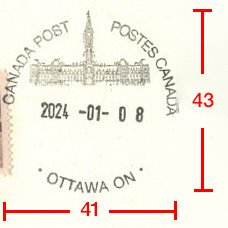

Ottawa Postal Station B pictorial cancel
Centre Block of the Canadian parliamentary complex · Parliament (new)
- Status
- Active
- Run dates
- ? to present
- Design
- Centre Block of the Canadian parliamentary complex
- Ink colour
- Black
- Designer
- Unknown
- Post office
- Ottawa Postal Station B
58 Sparks St
Ottawa, ON
K1P 5A0 - Subjects
- architecture, building, government, Neo-Gothic, parliament
Collect it by mail. Send your stamped covers, with a stamped return envelope, to the post office address above. How to collect pictorial cancels by mail · en français
 Ottawa Postal Station BParliament (old)
Ottawa Postal Station BParliament (old) Ottawa Postal Station BChinese
Ottawa Postal Station BChinese Orleans Gardens POJeanne d
Orleans Gardens POJeanne d Almonte POBirthplace of / Ville natale de James Naismith / Inventor of / Inventeur de Basketball
Almonte POBirthplace of / Ville natale de James Naismith / Inventor of / Inventeur de Basketball Barry's Bay POOld
Barry's Bay POOld Havelock POHome of the Havelock Country Jamboree
Havelock POHome of the Havelock Country Jamboree